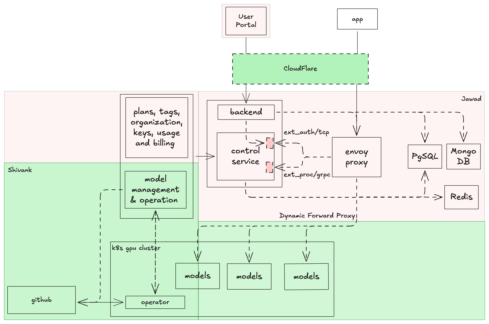

Product Summary
AI Gateway is a unified open-source LLM inference platform built by Infinia Technologies (IHC Group). It provides a dual-compatible API (OpenAI + Anthropic format) endpoint to many open-source models with cost intelligence, enterprise governance, and compliance-as-architecture.
Timeline
Brand Guidelines
AI Gateway follows a dark-first monochrome design system. Sharp corners, uppercase headings, and technical precision define the visual language.
Logo
The AI Gateway logo is the Material Design transit-connection-variant icon — a network of connected nodes representing unified model routing and connectivity.
Logo Usage Rules
| Rule | Details |
|---|---|
| Minimum size | 24px × 24px (icon only), 120px width (lockup) |
| Clear space | Minimum 50% of icon width on all sides |
| Dark backgrounds | White icon (#ffffff) |
| Light backgrounds | Black icon (#000000) |
| Do not | Rotate, distort, add drop shadows, change colors, place on busy backgrounds |
| Source | Material Design Icons: transit-connection-variant |
| Favicon | Use icon-only at 32px × 32px with transparent background |
Color Palette
Typography
Component Patterns
| Pattern | Properties | Usage |
|---|---|---|
| Card | bg: #1a1a1a, border: 1px rgba(255,255,255,0.12), padding: 1.5rem, radius: 0 | Content containers, stats, pricing |
| Featured Card | border: 2px #ffffff, box-shadow: 0 4px 20px rgba(255,255,255,0.08) | Highlighted items, popular tier |
| Feature Box | border-left: 3px rgba(255,255,255,0.6), bg: rgba(255,255,255,0.04) | Callouts, feature highlights |
| Table Header | bg: #1a1a1a, font: 0.75rem uppercase 0.06em spacing | All data tables |
| Hover State | translateY(-2px), box-shadow: 0 4px 16px rgba(0,0,0,0.3), transition: 0.2s | All interactive cards |
| Grid | auto-fit minmax, gap: 1.25rem | Responsive layouts |
Spacing & Layout
| Element | Value |
|---|---|
| Card padding | 1.5rem |
| Grid gap | 1.25rem |
| Section margin | 2.5rem |
| Border width | 1px (standard), 2px (featured) |
| Border radius | 0 (always) |
| Content max-width | 1100px |
| Sidebar width | 260px |
Brand Voice
Enterprise, technical, precise. Uppercase headings convey authority. Concise descriptions respect the reader's time. Monospace for all technical content. Dark-first design signals professional-grade tooling.
Target Users & Personas
Behavioral Segments
Milestones & Timeline
M1: March 28 — Users Can Sign Up and Make API Calls
Exit criteria: New user signs up, receives $5 credit, creates API key, makes successful POST /v1/chat/completions with streaming. All models accessible.
M2: April 5 — Playground, Cost Dashboard, Team Management
Exit criteria: Full playground with comparison modes. Cost dashboard with real-time spend. Org management with role-based access. Key scoping and rotation working.
M3: April 11 — Billing Live
Exit criteria: Stripe billing active. All tiers purchasable. Invoices generated. Public playground with IP-based rate limiting.
M4: April 15 — LAUNCH
Gate criteria: All M1-M3 features passing. 99.9% uptime for 7+ consecutive days. Load test at 2x peak. Security audit complete. 1+ IHC subsidiary onboarded end-to-end. Monitoring and on-call operational.
Feature-to-Milestone Matrix
| ID | Feature | M1 | M2 | M3 | Priority |
|---|---|---|---|---|---|
| A1 | User Authentication | ✓ | P0 | ||
| A2 | Team/Org Management | ✓ | P1 | ||
| B1 | Unified Inference API | ✓ | P0 | ||
| B2 | Model Catalog | ✓ | P0 | ||
| B3 | Streaming Responses | ✓ | P0 | ||
| C1 | Basic API Key Mgmt | ✓ | P0 | ||
| C2 | Advanced Key Scoping | ✓ | P1 | ||
| C3 | Key Rotation | ✓ | P1 | ||
| D1 | Dashboard Shell | ✓ | P0 | ||
| D2 | Interactive Playground | ✓ | P0 | ||
| D3 | Side-by-Side Comparison | ✓ | P0 | ||
| D4 | Blind Comparison | ✓ | P0 | ||
| D5 | Public Playground | ✓ | P1 | ||
| E1 | Cost Intelligence Dashboard | ✓ | P1 | ||
| E2 | Budget Alerts | ✓ | P1 | ||
| E3 | Usage Analytics | ✓ | P1 | ||
| F1 | Credit System | ✓ | P0 | ||
| F2 | Metered Billing | ✓ | P0 | ||
| F3 | Pricing Tiers | ✓ | P1 | ||
| F4 | Billing Dashboard | ✓ | P1 | ||
| F5 | Enterprise Discounts | ✓ | P2 |
Feature Requirements — Deep Dive
Domain A: Authentication & User Management
A1. User Authentication M1 · Mar 28
Email/password signup, Google OAuth, Microsoft Entra ID SSO, email verification, forgot password. $5 free credit applied on verification.
- Email/password signup
- Google OAuth
- Microsoft Entra ID (Azure AD) SSO
- Email verification
- Forgot password
- $5 free credit on verification
- User visits
/signup. Sees form with email, password, confirm password fields, "Sign up with Google" OAuth button, and "Sign in with Microsoft" button. - Email path: User enters email + password (min 8 chars, mixed case, 1 number). Clicks "Create Account".
- System creates account in
pending_verificationstate. Sends verification email within 30 seconds. - User clicks verification link (expires 24h). Account moves to
active. $5 credit applied. System auto-creates an organisation named"{User's Name}'s Organisation"with an auto-generated URL-safe slug. User becomes Owner. Redirected to dashboard under this org context with onboarding card. - Google OAuth path: User clicks "Sign up with Google". Redirected to Google consent. On return, account created (or linked if email matches) and immediately active. $5 credit applied. Organisation auto-created as above.
- Microsoft Entra ID path: User clicks "Sign in with Microsoft". Redirected to Microsoft identity platform (OAuth 2.0 / OIDC). Supports personal Microsoft accounts, work/school (Entra ID) accounts, and multi-tenant configurations. On return, account created (or linked if email matches) and immediately active. $5 credit applied. Organisation auto-created as above. If the user's Entra tenant provides group claims, these are stored for future RBAC mapping.
- Forgot password: User clicks "Forgot password" on
/login. Enters email. Reset email sent within 30s. Link expires 1h. User sets new password. Existing sessions preserved.
A2. Team/Org Management M2 · Apr 5
Manage organisations (auto-created on signup), invite members by email, Admin/Member roles, org-level default settings.
- Rename organisation
- Invite members by email
- Admin/Member roles
- Org-level default settings
- User’s organisation is auto-created on signup (named
"{Name}'s Organisation"with auto-generated slug). User can rename it from Settings → Organization. - Owner navigates to Team tab. Clicks "Invite Member". Enters email + selects role (Admin or Member).
- Invitee receives email with join link (expires 7 days). Clicks link, signs up or signs in, joins org.
- Owner/Admin navigates to Org Settings. Sets default model allowlist, rate limits, and cost ceilings for new keys.
- Members see org context in dashboard.
Domain B: Inference API & Models
B1. Unified Inference API M1 · Mar 28
Dual-compatible inference API supporting both OpenAI and Anthropic SDK formats. many open-source models served from self-hosted K8s GPU cluster. Drop-in replacement for both OpenAI and Anthropic SDKs.
- OpenAI-compatible endpoint (
/v1/chat/completions) - Anthropic-compatible endpoint (
/v1/messages) - many open-source models
- Drop-in replacement for both OpenAI SDK and Anthropic SDK
- Dual auth header support (
Authorization: Bearerfor OpenAI,x-api-keyfor Anthropic)
- Developer copies API key (
tf-xxxx) from dashboard. - Changes base URL in existing code:
base_url = "https://api.aigateway.ai/v1" - Sets model to any supported model:
model = "meta-llama/llama-3.1-70b-instruct" - Makes
POST /v1/chat/completions(OpenAI) orPOST /v1/messages(Anthropic) with appropriate auth header. - Receives response in the caller’s expected format. Usage object includes token counts for billing.
- Each request generates a billing event: model, tokens (input/output), cost, latency, key ID.
B2. Model Catalog M1 · Mar 28
Browsable, searchable list of all models with rich metadata: provider, context window, cost, capabilities, speed, benchmarks.
- Browsable model list
- Search/filter
- Provider metadata
- Context window
- Cost per token
- Capabilities & speed
- Benchmarks
- User navigates to Models page from dashboard sidebar.
- Sees full model list with columns: Name, Provider, Context, Input Cost, Output Cost, Capabilities, Speed.
- Uses search bar (Command/⌘K) to find models by name or family.
- Filters by: capability (chat/code/vision), provider, price range, context window size, speed tier.
- Clicks model row to expand detail view with benchmarks (MMLU, HumanEval), full description, and "Try in Playground" button.
- Sorts by any column (cost, context window, speed).
B3. Streaming Responses M1 · Mar 28
Real-time token-by-token streaming via Server-Sent Events for all chat completion requests.
- Token-by-token streaming
- Server-Sent Events
- All chat completions
- Client sends a chat completion request with streaming enabled.
- Server opens a persistent connection and begins streaming the response.
- Tokens arrive incrementally as they are generated.
- Client renders tokens as they arrive in real time.
- Stream ends when generation is complete and the connection is closed.
Domain C: API Key Management
C1. Basic API Key Management M1 · Mar 28
Create, view (masked), copy, and revoke API keys. Keys prefixed with tf-.
- Create API keys
- View (masked)
- Copy to clipboard
- Revoke keys
tf-prefix
- User navigates to API Keys page from dashboard sidebar.
- Clicks "Create Key". Dialog: enter key name, optional source/app label.
- Key generated and displayed once in full:
tf-sk_live_xxxxxxxxxxxxxxxxxxxx. Prominent "Copy" button. - After dialog close, key shows as masked:
tf-sk_l...xxxx. - Key list shows: Name, Masked Value, Source/App, Created, Last Used, Status (active/revoked).
- User clicks "Revoke" on a key. AlertDialog confirmation. Key immediately stops authenticating (<1s).
C2. Advanced API Key Scoping M2 · Apr 5
Per-key model allowlists, RPM rate limits, monthly cost ceilings, labels/tags.
- Model allowlists
- RPM rate limits
- Monthly cost ceilings
- Labels/tags
- User creates or edits a key. "Advanced Settings" section expands.
- Model allowlist: Multi-select from model catalog. Only selected models allowed. Others return 403.
- RPM limit: Number input. Requests exceeding limit get 429 with Retry-After header.
- Monthly cost ceiling: Dollar amount. Key stops working when ceiling hit. Email at 80% and 100%.
- Labels/tags: Key-value pairs for filtering and reporting (e.g.,
env:production,team:ml-ops). - Settings saved. Enforcement immediate for new requests.
C3. Key Rotation M2 · Apr 5
Generate replacement key with 24-hour grace period where both old and new keys work.
- Generate replacement key
- 24-hour grace period
- Dual-key overlap
- User clicks "Rotate" on an active key.
- New key generated and displayed once. Old key enters 24-hour grace period.
- Dashboard shows countdown timer on old key. Both keys labeled clearly ("Current" / "Rotating out").
- Both keys authenticate successfully for 24 hours.
- After 24h, old key auto-revoked. New key becomes sole active key.
- User can cancel rotation during grace period (old key restored as primary).
Domain D: Dashboard & Playground
D1. Dashboard Shell M1 · Mar 28
Authenticated dashboard with sidebar navigation, user menu, and onboarding card for first-time users.
- Sidebar navigation
- User menu
- Onboarding card
- Authenticated access
- User logs in. Redirected to
/dashboard. - Sees sidebar with navigation: Overview, Playground, Models, API Keys, Usage, Billing, Settings, Team.
- Top-right shows user avatar + dropdown: Profile, Organization, Billing, Logout.
- First-time users see onboarding card with 3 steps: (1) Copy your API key, (2) Make your first API call, (3) Explore the playground. Progress tracked.
- Onboarding card is dismissible. Does not reappear after dismissal.
- Dashboard adapts: desktop (sidebar visible), tablet (collapsible sidebar), mobile (hamburger menu).
D2. Interactive Playground M2 · Apr 5
Web-based chat interface to test any model with system prompt, message composer, and streamed responses. Connected to the active wallet balance — every request consumes tokens and deducts the corresponding cost from the wallet balance in real time.
- Chat interface
- Model selector
- System prompt
- Message composer
- Streamed responses
- Sessions saved and resumable
- User navigates to Playground from sidebar.
- Selects model from dropdown (searchable, grouped by family).
- Optionally sets system prompt in collapsible text area at top.
- Types message in composer at bottom. Send on Enter (Shift+Enter for newline).
- Response streams token-by-token with typing indicator.
- After response completes: shows model, tokens (input/output), cost, TTFT, total latency below the message.
- User can continue conversation or click "New Chat" to start a fresh session.
- All sessions are automatically saved and listed under a "History" panel. User can resume any past session.
- Usage deducted from credit balance / billing. Appears in cost dashboard.
D3. Side-by-Side Comparison M2 · Apr 5
Send same prompt to 2 models simultaneously. See responses stream in parallel with latency and cost comparison.
- Dual model selection
- Parallel streaming
- Latency comparison
- Cost comparison
- User switches to "Compare" tab in Playground.
- Selects Model A (left panel) and Model B (right panel).
- Types prompt. Clicks "Compare" (or Enter). Prompt sent to both models simultaneously.
- Both responses stream in parallel in side-by-side panels.
- After completion: each panel shows tokens, cost, TTFT, total latency. Faster/cheaper model highlighted.
D4. Blind Comparison Mode M2 · Apr 5
Responses shown without labels. User picks winner. Models revealed after choice. Shareable URLs.
- Anonymous responses
- Winner selection
- Model reveal
- Shareable URLs
- User switches to "Blind" tab in Playground.
- Selects 2 models (hidden from view after selection). Types prompt. Clicks "Go".
- Responses stream as "Response A" and "Response B" with no identifying info.
- After both complete, user clicks "Pick Winner" on preferred response.
- Reveal animation: model names, costs, latency shown for both. Winner highlighted.
- Unique shareable URL generated. Anyone with URL sees prompt, both responses (blinded), and can view reveal.
D5. Public Playground M3 · Apr 11
No account required for basic use. Limited to 5 requests per session. When authenticated, connected to the active wallet balance — requests consume tokens and deduct from the wallet balance in real time.
- No account required
- 5 requests/session limit
- Billing connection when authed
- Unauthenticated visitor navigates to
/playground. - Can select model and send prompts. IP-based rate limit: 5 requests per session.
- After 5th request, banner: "Create a free account for unlimited playground access + $5 credit."
- If signed in, playground usage counts against credit balance / billing method.
Domain E: Cost & Usage Intelligence
E1. Cost Intelligence Dashboard M2 · Apr 5
Real-time spend tracking: total over time, by model, by API key. Date range picker. CSV export. Pivot table for multi-dimensional analysis.
- Real-time spend tracking
- By model breakdown
- By API key breakdown
- Date range picker
- CSV export
- Pivot table analysis
- User navigates to Usage → Cost from sidebar.
- Top bar: date range picker (Today, 7d, 30d, This Month, Custom) + CSV export button.
- Total spend card at top with current period total and trend vs. previous period.
- Spend over time chart (line/area chart) showing daily/weekly spend.
- Spend by model bar chart: horizontal bars showing cost per model, sorted by spend.
- Spend by API key table: key name, spend, % of total, request count.
- Pivot table view: User can group by model × key × date × team to see any permutation of cost breakdown. Column visibility toggles. Drill-down by clicking group headers.
- Clicks "Export CSV". Downloads current view as CSV file.
E2. Budget Alerts M2 · Apr 5
Monthly cost ceiling per organization. Email notifications at 80% and 100% thresholds.
- Monthly cost ceiling
- 80% threshold alert
- 100% threshold alert
- Email notifications
- Owner/Admin navigates to Org Settings → Budget.
- Sets monthly budget amount (e.g., $5,000).
- Chooses behavior at 100%: "Alert only" or "Hard stop" (disable all keys).
- At 80% ($4,000): automated email to all Admins + Owner. Yellow warning banner on dashboard.
- At 100% ($5,000): automated email. Red banner. If hard-stop: all org keys return 429 until budget increased or next billing cycle.
E3. Usage Analytics M2 · Apr 5
Requests by model, token breakdown (input/output), latency p50/p95/p99, error rates. Filterable with pivot table for permutation/combination analysis.
- Requests by model
- Token breakdown (input/output)
- Latency p50/p95/p99
- Error rates
- Pivot table analysis
- User navigates to Usage → Analytics from sidebar.
- Request volume chart: Line chart showing requests over time, colored by model.
- Token breakdown: Stacked bar chart (input vs. output tokens) by model.
- Latency percentiles: Table showing p50, p95, p99 per model. Sparkline charts for trends.
- Error rates: Error percentage per model. Breakdown by error code (429, 500, 503).
- Pivot table: User can group and pivot by any combination of: Model, API Key, Status, Date, Team. See request counts, tokens, latency, error rate across all permutations.
- All views filterable by model, API key, date range, status (success/error).
Domain F: Billing & Payments
F1. Credit System M1 · Mar 28
$5 free credit on signup. Consumed before any paid billing method is charged.
- $5 free credit
- Auto-apply on signup
- Consumed before paid billing
- User completes email verification (or Google OAuth signup).
- $5.00 credit automatically applied to account. No credit card required.
- Credit balance visible in dashboard header and billing page.
- API usage deducts from credit balance first.
- When balance falls below $1.00: email + dashboard notification ("Low credit balance").
- When balance reaches $0.00: if no payment method, API calls return 402. Prompt to add payment method or upgrade plan.
F2. Postpaid Billing (Invoice) M3 · Apr 11
Postpaid billing method. Usage is metered per million tokens consumed at model-specific rates and invoiced monthly.
- Per-million-token billing at model-specific rates
- Input and output tokens metered separately
- Hourly usage aggregation
- Monthly invoice generation via Stripe
- Net-30 payment terms
- User applies for postpaid billing (requires credit approval for new accounts, or enterprise agreement).
- API usage generates billing events per request (input tokens + output tokens at model-specific rates per million tokens).
- Usage aggregated hourly. Real-time estimates on dashboard (not billed until invoice).
- At end of billing period (monthly): invoice generated with line items per model showing token consumption and cost.
- Invoice sent via email and available in dashboard. Payment due Net-30.
- Stripe charges payment method on file, or customer pays via bank transfer.
- Failed payment: retry 3 times over 7 days. After final failure, account restricted to prepaid only.
F3. Per-Million-Token Model Pricing M3 · Apr 11
All models priced per million tokens with separate input and output rates. Both prepaid and postpaid billing methods use the same published rates.
- Per-million-token pricing for every model
- Separate input and output token rates
- Published rate card on website
- Volume discounts for bulk prepaid purchases or committed postpaid spend
- Custom enterprise rates available
| Model Category | Example Models | Input (per 1M tokens) | Output (per 1M tokens) |
|---|---|---|---|
| Small (7–8B) | LLaMA 3.1 8B, Mistral 7B | $0.10–0.20 | $0.10–0.20 |
| Medium (13–34B) | LLaMA 3.1 13B, CodeLlama 34B | $0.30–0.60 | $0.30–0.60 |
| Large (70B+) | LLaMA 3.1 70B, Mistral Large, DeepSeek V3 | $0.50–1.20 | $0.50–1.50 |
| Embeddings | Various embedding models | $0.01–0.05 | — |
| Commitment Level | Discount |
|---|---|
| $1K+ prepaid credit purchase | 5% |
| $5K+ prepaid credit purchase | 10% |
| $10K+ prepaid or committed postpaid spend | 15% |
| $50K+ committed annual spend | 20–30% (custom) |
- User navigates to Pricing page. Sees per-million-token rates for all models.
- Chooses billing method: Prepaid (buy credits) or Postpaid (monthly invoice).
- For Prepaid: enters credit purchase amount, applies payment. Credits available immediately.
- For Postpaid: completes credit approval or enterprise agreement. Usage billed monthly.
- Volume discounts applied automatically based on purchase/commitment level.
- Enterprise customers: "Contact Sales" button opens form for custom rates and committed spend agreements.
F4. Billing Dashboard M3 · Apr 11
Current billing method, usage summary, credit balance or invoice history, payment method, and method switching flow.
- Current billing method display (Prepaid or Postpaid)
- Credit balance (Prepaid) or current period usage (Postpaid)
- Token consumption breakdown by model
- Invoice history (Postpaid) or top-up history (Prepaid)
- Payment method management
- Switch between billing methods
- User navigates to Billing from sidebar.
- Billing method card: Shows "Prepaid" or "Postpaid" with option to switch.
- For Prepaid: Credit balance, recent deductions by model, top-up history, "Add Credits" button.
- For Postpaid: Current period usage by model, estimated invoice amount, invoice history table (date, amount, status, download PDF).
- Token consumption breakdown: Per-model table showing tokens consumed, rate per million, and cost.
- Payment method section: Card on file (masked), "Update" and "Add backup" buttons.
F5. Enterprise & Volume Agreements M3 · Apr 11
Custom pricing, volume discounts, and committed spend agreements for high-volume customers. Includes IHC Group inter-company billing.
- Volume discounts on prepaid credit purchases
- Committed spend agreements for postpaid customers
- Custom per-million-token rates for enterprise accounts
- IHC Group inter-company billing
- Volume discounts (Prepaid): Customers purchasing bulk credits receive automatic discounts at defined thresholds.
- Committed spend (Postpaid): Enterprise customers commit to minimum monthly or annual spend in exchange for discounted per-million-token rates.
- Custom pricing: Admin sets custom per-million-token rates for specific enterprise accounts via internal tool.
- IHC Group billing: Inter-company billing with 20–30% discount on published rates. Automated cost allocation and cross-charging.
- All discounts visible on invoice or credit purchase receipt as separate line items.
Technical Architecture
System Overview
The platform follows a layered architecture with clear ownership boundaries. All external traffic enters through CloudFlare, which handles CDN, DDoS protection, and edge caching before routing to the internal infrastructure.

Request Flow
Component Map
| Component | Technology | Purpose |
|---|---|---|
| Edge Layer | CloudFlare | CDN, DDoS mitigation, TLS termination, edge caching |
| API Gateway | Envoy Proxy | Auth (ext_auth/tcp), rate limiting, request routing |
| Control Service | Custom service | Auth decisions, ext_proc/gRPC processing, policy enforcement |
| Backend | Application server | Dashboard API, billing logic, org management |
| Dynamic Forward Proxy | Envoy | Routes inference requests to model endpoints in GPU cluster |
| Model Serving | K8s GPU Cluster | Hosts open-source model instances (LLaMA, DeepSeek, Mistral, etc.) |
| Operator | K8s Operator | Model lifecycle management, scaling, health checks |
| Data Storage | Engineering team decision | Users, orgs, API keys, billing, plans, model metadata, configurations, caching |
| CI/CD | GitHub | Source control, operator deployment pipelines |
Ownership Domains
| Owner | Domain | Components |
|---|---|---|
| Jawad | Infrastructure & Data | Backend, Control Service, Envoy Proxy, Data Stores, Dynamic Forward Proxy |
| Shivank | Platform & Models | Plans/Tags/Org/Keys/Usage/Billing logic, Model Management & Operations, K8s GPU Cluster, Operator, GitHub CI/CD |
Envoy Proxy Integration
Envoy acts as the central API gateway with two extension points connecting to the Control Service:
| Extension | Protocol | Purpose |
|---|---|---|
ext_auth | TCP | Authentication & authorization — validates API keys (tf- prefix), checks rate limits, verifies org membership |
ext_proc | gRPC | Request/response processing — token counting, usage metering, request transformation, billing event emission |
GPU Cluster
Models run on a Kubernetes GPU cluster managed by a custom operator. The operator handles model deployment, scaling, health monitoring, and connects to GitHub for GitOps-driven model configuration. Inference requests reach models via Envoy's Dynamic Forward Proxy, which routes based on the requested model ID.
Data Stores
Database and storage technology choices are left to the engineering team. Key data domains to support:
| Data Domain | Access Pattern |
|---|---|
| Users, orgs, API keys, billing accounts, invoices, plans, tags | Transactional CRUD, joins for billing aggregation |
| Model catalog, provider configs, playground conversations | Document reads, flexible updates |
| Rate limit counters, session tokens, cached model lists | High-frequency reads/writes, TTL-based expiry |